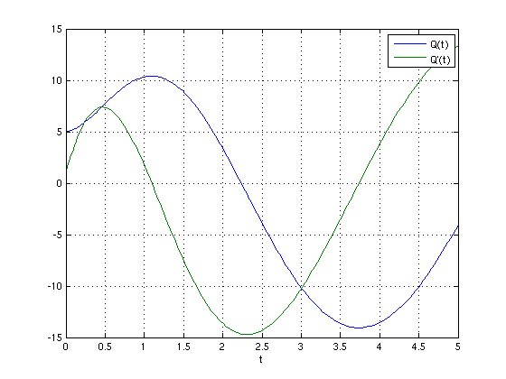

Approximating ODEs
As an example for a more complex function with multiple input- and output arguments, we show how to handle an ordinary differential equation. The model considered is a second order differential equation
Q''(t) + a Q'(t) + b = 50 cos(t)
from [1, pp. 145-162] simulating an electrical circuit.
Contents
The ODE model in Matlab
Rewriting this second-order equation as a system of first order equations, we can define the ODE file in MATLAB format as follows:
type('circuit.m')
function [out1, out2, out3] = circuit(t, u, flag, a, b);
% CIRCUIT definition of the electrical circuit ODE.
switch flag
case ''
out1 = [u(2); 50*cos(t) - a*u(2) - b*u(1)];
case 'init'
out1 = [0; 5]; % tspan
out2 = [5; 1]; % initial conditions
out3 = odeset('RelTol', 1e-6);
end
We can solve this ODE for a = 2, b = 4, and the default initial conditions and time span as defined in the ODE file using the MATLAB solver ODE45.
[t,Q] = ode45('circuit', [], [], [], 2, 4); plot(t,Q) xlabel('t'); grid on; legend('Q(t)', 'Q''(t)');
Interpolation problem statement and possible applications
We now consider the initial conditions and the parameters a,b to vary in some range, that is we assume intervals for Q(0), Q'(0), a, and b, and compute an error-controlled sparse grid interpolant for the ODE model at each time step. The interpolant can then be used to do several useful analyses, for instance, perform a Monte Carlo simulation with random variables, optimize the model for the given range of parameters and initial conditions, e.g. minimize or maximize the amplitude, or compute an envelope of the result using fuzzy calculus or interval analysis. In many cases, this can be done considerably faster than by using the original ODE directly, since the construction and evaluation of the interpolant is very fast.
The interface function
We proceed as follows. First of all, we write an interface function of the ODE model to enable its evaluation by the spvals function.
type('interface_circuit.m')
function varargout = interface_circuit(Q0, Q0prime, a, b, tspan, nsteps)
% Definition of the complete model as a function of the uncertain
% input parameters.
% The time steps must be at fixed steps such that the number of
% outputs and time steps stay the same for each parameter
% variation.
t = linspace(tspan(1), tspan(2), nsteps);
% Call the ODE solver
[t, Q] = ode45('circuit', t, [Q0 Q0prime], [], a, b);
% Convert result vector to parameter list. This conversion is
% necessary, since the output arguments of the objective function
% to SPVALS must all be scalar. In this case, we assume that only
% the first column (i.e. Q, not Q') is of interest and thus
% returned.
varargout = num2cell(Q(:,1)');
Interpolant construction
Next, we construct the interpolant, simultaneously for all time steps. Here, we use the intervals [Q(0)] = [4,6], [Q'(0)] = [0,2], [a] = [1,3], and [b] = [3,5].
% Problem dimension d = 4; % Define the time span considered tspan = [0 5]; % Define the number of steps to consider nsteps = 101; % Define the objective range of the initial conditions and the % parameters range = [4 6; % [Q(0)] 0 2; % [Q'(0)] 1 3; % [a] 3 5]; % [b] % Maximum number of sparse grid levels to compute nmax = 3; % Initialize z z = []; % Turn insufficient depth warning off, since it is anticipated. warning('off', 'MATLAB:spinterp:insufficientDepth'); % Compute increasingly accurate interpolants; use previous results; % display estimated maximum relative error over all time steps at % each iteration. for n = 1:nmax options = spset('Vectorized', 'off', 'MinDepth', n, 'MaxDepth', ... n, 'NumberOfOutputs', nsteps, 'PrevResults', z); z = spvals('interface_circuit', d, range, options, tspan, nsteps); disp(['Current (estimated) maximum relative error over all time' ... 'steps: ', num2str(z.estRelError)]); end % Turn insufficient depth warning back on warning('on', 'MATLAB:spinterp:insufficientDepth');
Current (estimated) maximum relative error over all timesteps: 0.64844 Current (estimated) maximum relative error over all timesteps: 0.34119 Current (estimated) maximum relative error over all timesteps: 0.057381
Computing interpolated values
We can now compute interpolated values at each time step, for any combination of parameters within the range that the interpolant was computed for. The structure z contains all the required information. We only need to select the desired output parameter (i.e. the time step in this example). To compute 10 randomly distributed values at time t=5 (which is step #101 with the chosen discretization) within the box [Q(0)] x [Q'(0)] x [a] x [b], we would simply use the following commands:
% Compute 10 randomly distributed points in [0,1] and re-scale them to % the objective range x = cell(1,4); for k = 1:d x{k} = range(k,1) + rand(1,10) .* (range(k,2) - range(k,1)); end % Select output parameter #101 z.selectOutput = 101; % Compute and display interpolated values y = spinterp(z, x{:})
y = Columns 1 through 7 -2.7824 -1.3367 -1.8990 -3.4497 -1.9133 -4.1978 -0.1284 Columns 8 through 10 -4.9939 -8.1073 -3.3928
References
| [1] | J. J. Buckley, E. Eslami, and T. Feuring. Fuzzy Mathematics in Economics and Engineering. Physica-Verlag, Heidelberg, Germany, 2002. |